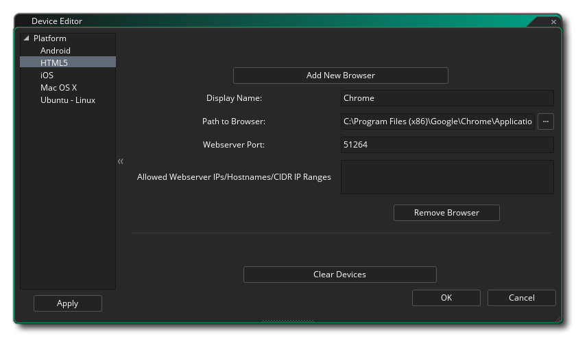
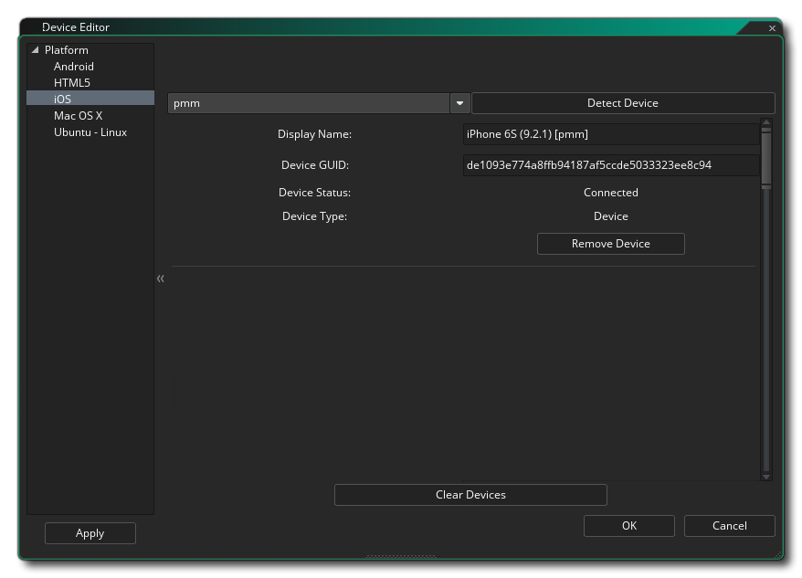
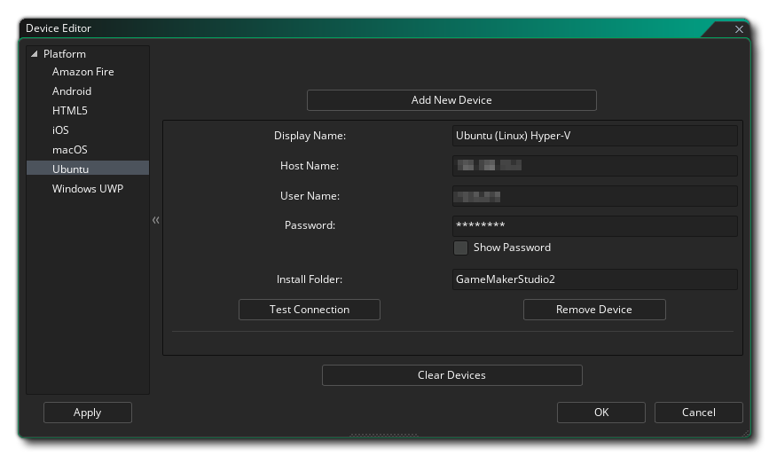
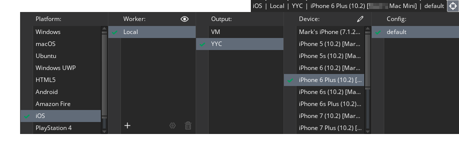

Se accede al Administrador de dispositivos haciendo clic  en el botón de lápiz
en el botón de lápiz  dentro de la Lista de objetivos:
dentro de la Lista de objetivos: 
Al hacer clic en este botón, se abrirá el Administrador de Dispositivos, donde podrá configurar diferentes dispositivos para las plataformas de destino que desea compilar y probar (tenga en cuenta que las plataformas disponibles dependerán de la Licencia que tenga y no todas ellas pueden estar visibles). A continuación puede encontrar detalles sobre la configuración de dispositivos para cada una de las plataformas de destino:
Aquí puede hacer clic en el botón Agregar nuevo dispositivo para agregar manualmente un nuevo dispositivo Android a la lista, o puede hacer clic en el botón Detectar dispositivo para que GameMaker Studio 2 detecte automáticamente cualquier dispositivo conectado a través de una conexión por cable. También puede configurar un Android virtual Android haciendo clic en el botón marcado Ejecutar AVD. Esto abrirá el administrador de dispositivos virtuales de Android, donde puede crear un nuevo AVD (consulte aquí para obtener más información). Una vez que haya creado uno, debe iniciarlo desde el administrador de AVD y luego en GameMaker Studio 2 haga clic en el botón Detectar dispositivo y se debe agregar automáticamente a la lista de dispositivos:
Una vez que tenga un dispositivo agregado, puede verificar la conexión utilizando el botón Probar conexión o quitarlo de la lista nuevamente haciendo clic en el botón Eliminar dispositivo.

El administrador de dispositivos HTML5 es para agregar diferentes navegadores a la lista de dispositivos para la orientación cuando se ejecuta. Debe hacer clic en el botón Agregar nuevo navegador y luego darle un nombre al dispositivo y apuntar a GameMaker Studio 2 a la ruta del ejecutable del navegador. También puede configurar el número de puerto (el valor predeterminado es 51264) en caso de conflicto, así como establecer los rangos de IP del servidor web, nombres de host y CIDR permitidos según sea necesario.

Antes de que pueda configurar sus dispositivos iOS, debe haber configurado su dispositivo Mac y probado su conexión (ver más abajo para más detalles). Una vez hecho esto, puede seleccionar la Mac a la que desea apuntar desde el menú desplegable en la parte superior de la ventana y luego hacer clic en el botón Detectar dispositivo para que GameMaker Studio 2 encuentre automáticamente cualquier dispositivo iOS conectado. Una vez conectado, los detalles del dispositivo se mostrarán en la lista en esta ventana.
Para agregar un dispositivo Mac al administrador, primero debe hacer clic en el botón etiquetado Agregar nuevo dispositivo que agregará el dispositivo y creará algunos campos en blanco que deberá completar para habilitar la conexión. Primero debe nombrar el dispositivo para que pueda identificarlo en la lista de objetivos y luego dar el nombre de host (o IP) de la Mac. A continuación, debe proporcionar el nombre de usuario del usuario al que desea vincular y la contraseña que utilizaron. Si lo desea, también puede cambiar la carpeta de instalación en la Mac donde prefiera GameMaker Studio 2 para almacenar los archivos de compilación para sus proyectos.
Cuando todo haya terminado, puede hacer clic en el botón Probar conexión para asegurarse de que GameMaker Studio 2 pueda comunicarse con la Mac.
NOTA: Si está desarrollando para iOS, debe haberlo hecho primero y haber establecido una conexión funcional con la Mac que desea utilizar para el desarrollo.NOTA: Debe haber habilitado el Inicio de sesión remoto en el mac de destino. Esto se puede hacer yendo a Preferencias -> Compartir y habilitar inicio de sesión remoto para el usuario que desea iniciar sesión.

Para agregar un dispositivo Ubuntu (Linux) al administrador, primero debe hacer clic en el botón etiquetado Agregar nuevo dispositivo que agregará el dispositivo y creará algunos campos en blanco que deberá completar para habilitar la conexión. Primero debe nombrar el dispositivo para que pueda identificarlo en la lista de objetivos y luego dar el nombre de host (o IP) de la máquina Ubuntu (o VM). A continuación, debe proporcionar el nombre de usuario del usuario al que desea vincular y la contraseña que utilizaron. También debe proporcionar una carpeta en la máquina Ubuntu que desee utilizar para instalar sus proyectos. y cuando todo haya terminado, puede hacer clic en el botón Probar conexión para asegurarse de que GameMaker Studio 2 pueda comunicar con la máquina Ubuntu.
Antes de que pueda agregar un dispositivo para el objetivo UWP Windows 10, debe haber configurado Device Portal en el dispositivo. Si no haces esto, GameMaker Studio 2 no podrá comunicarse con el dispositivo ni crear correctamente tus aplicaciones UWP.
La forma más sencilla de habilitar el Modo desarrollador es simplemente escribir " Modo desarrollador " en la Búsqueda de Windows y luego hacer clic en la entrada " Configuración " que se mostrará. Esto abrirá la siguiente ventana:
Debe seleccionar la opción Modo de desarrollador (que puede requerir que Windows descargue e instale algunos paquetes adicionales) y luego seleccione la opción debajo de Habilitar portal de dispositivos. El portal del dispositivo es lo que permitirá que GameMaker Studio 2 se comunique con la PC con Windows 10 y, cuando esté habilitado, se le pedirá que proporcione un nombre de usuario y una contraseña:
Tenga en cuenta que el nombre de usuario y la contraseña deben ser únicos para el portal y no deben ser los utilizados por su cuenta de Microsoft u otras credenciales de Windows. Una vez que haya dado esta información, haga clic en el botón etiquetado como aplicar y luego cierre el administrador de configuración y regrese a GameMaker Studio 2.
Para obtener más información sobre Device Portal, consulte este artículo de Microsoft: Device Portal for Desktop.
Ahora puede abrir el Administrador de dispositivos en GameMaker Studio 2 y configurar un dispositivo (o dispositivos) para su uso:
Para agregar un dispositivo compatible con Windows 10 UWP al administrador, primero debe hacer clic en el botón etiquetado Agregar nuevo dispositivo que agregará el dispositivo y creará algunos campos en blanco que deberá completar para habilitar la conexión. Primero debe nombrar el dispositivo para que pueda identificarlo en la lista de objetivos y luego darle al host: esta es la dirección IP del dispositivo con Windows 10 en la red que alojará el juego y debe tener el sufijo ": 50443 "para establecer el número de puerto. Después de eso, agregue el Nombre de usuario y la Contraseña que configuró en el Portal del dispositivo (como se mencionó anteriormente). Puede dejar el PIN en blanco, ya que no es necesario para UWP Windows 10 Desktop.
Para obtener detalles de configuración más específicos que cubren las diferentes salidas de UWP (Desktop, Mobile y XboxOne), consulte el servicio de ayuda de YYG: Configuración de UWP


Todas las ventanas de los diferentes dispositivos tienen una opción en la parte inferior para Borrar Dispositivos que, al hacer clic, eliminará todos los dispositivos conectados de la lista.
Una vez que haya configurado sus dispositivos, puede conectarse a cualquiera de ellos desde las opciones de Destino en la parte superior del IDE de GameMaker Studio 2 y probar / construir su juego llevará el proyecto a ese dispositivo: 